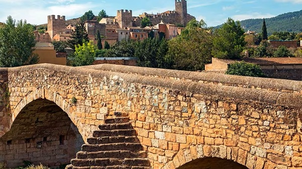

Los pueblos más bonitos
Los pueblos más bonitos


Montblanc es otro de los pueblos medievales más bonito de Cataluña. Está rodeado por una impresionante muralla de 1.700 metros que todavía conserva las torres de vigilancia alzadas durante la Edad Media.
En 1947, el centro de la ciudad fue declarado Conjunto Histórico por su arquitectura románica y gótica perfectamente conservada, sus iglesias escondidas
entre las estrechas calles del centro y sus encantadoras plazas. Además, la tradición catalana asegura que Montblanc fue el escenario en el que tuvo lugar la famosa leyenda de Sant Jordi y el dragón
una historia que los habitantes del pueblo recuerdan ypdf/santjordi.pdf celebran cada primavera.